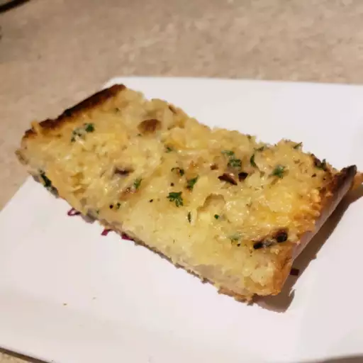

Garlic Bread

Garlic bread is bread with garlic and butter on it. It very much tastes very good and the garlic flavor works well with the buttery flavor. The bread provides a very good crunch which enhances the textural feeling you get when eating garlic bread. It has a savory flavor because of the garlic used on it. Along with the garlic there are herbs that accompany it which adds variety.
The variety of flavors work well with the bread as if they were meant to be together. They blend in well with the bread and are a very good side dish. It is often used a side dish in pastas or other dishes that are usually italian. The nice thing about garlic bread is it is simple yet delicous which is good for those who are still starting off in cooking meals whether it be for themselves or others.
This recipe is straight-forward and is easy to follow making it a perfect beginner guide for those who want to try it out. If you love simplicty then this recipe is the one for you. With relatively simple ingredients and instructions you can make an amazing dish with not much effort but with oustanding resukts that will surely surprise you or anyone who will try this recipe from you.
Ingredients
- 3 heads garlic
- 2 tablespoons olive oil
- 1 (1 pound) loaf Italian bread
- ½ cup butter, softened
- 2 tablespoons grated Parmesan cheese (Optional)
- 1 tablespoon chopped fresh parsley (Optional)
Instructions
- Preheat the oven to 350 degrees F (175 degrees C).
- Slice the tops off of garlic heads, so the tip of each clove is exposed. Place garlic heads, cut-sides up, on a baking sheet; drizzle tops with olive oil.
- Bake in the preheated oven until garlic is soft, about 30 minutes.
- Set the oven to broil.
- Slice bread loaf in half horizontally; place cut-side up on a baking sheet.
- Squeeze garlic cloves from their skins into a medium bowl. Stir in butter, Parmesan cheese, and parsley until well blended. Spread onto the cut sides of bread.
- Broil bread until toasted, about 5 minutes.